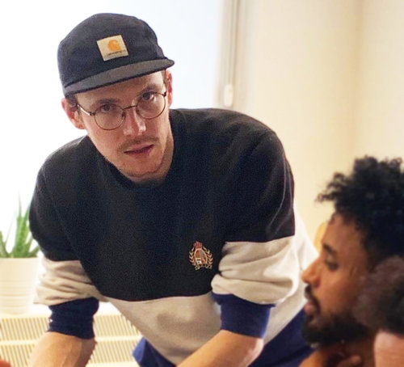

Ready?
Let’s jump-start your next career.
Looking for something new, but uncertain on what or how? We can help. Whether you’re fresh out of school, done with your current job, or recently moved to the Netherlands and can’t pick up your old job. We reshape your talent into future skills. Skills the market needs. Join our paid traineeship, work & learn at the same time and get yourself future ready.
If you have a mind, you’re a talent.
It can be hard to decide what your next step in life should be. Old places to leave, new places to explore. What jobs are out there? What do companies look for? What skills do you need? Luckily, we know the way. We believe that your mind is your ticket to a career you like. And that ticket is valid for life.
Did we catch your attention? We’d like to tell you more. Leave your info below so we can get in touch.
Reshape your talent into future skills.
Companies are looking for people with future skills. Like creative front-end development, data storytelling or creative learning development. Our work & learn tracks make you highly attractive to employers. You’ll invest in a range of skills that help you grow and continue growing - in your work and in your personal life. And you even get paid for it.
-
👉 LEARN TO WORK. WORK TO LEARN.
In some tracks you’ll start with a base training, which - in some cases - you can do alongside your work or studies. This makes it easier to take the jump and at the end of it, you’ll land on a solid foundation of skills. -
👉 LOOK BACK TO STAY AHEAD.
During this period, we evaluate together. If this road turns out to not be for you, no worries. There are no fines or penalties. We think it’s great you had the guts to try something new. -
👉 ON THE ROAD TO DISCOVERY.
In the first period, you’ll be working with a real team on real project assignments. You’ll be supported by instructors and graduates. This is your opportunity to discover if this track is something for you. -
👉 TAKING THE HIGHWAY.
If you want to move forward, you’ll start a paid traineeship at an organization. You’ll work 4 days a week and focus on learning for 1 day. Personal coaching supports you in your new career.
Reading this, you might have a lot of questions. Are you okay to talk for a couple of minutes?
What’s your next career?
If you like creating things, front-end development may be for you. It’s easy to learn. Sure—you’ll have to put in the hours, but it’s one of those skills that will give you immediate gratification: you see what you build.
It’s also high in demand, low in supply. This means: a good salary, easy to land a job, and a quick road to a permanent position (if that’s what you desire).
Front-end development is also highly flexible, which means you can arrange your work around the things that are important to you.
Do you enjoy creativity ánd technology? As a data storyteller you can do both: being creative by visualizing and technological by working with data. You will be the person that gives data driven recommendations to the business users in your organization.
The paid traineeship will take 2 years, starting with 3 months of intense training.
During this traineeship we will work on your soft skills (Scrum, Presentation Skills, etc.) and hard skills (SQL, Tableau, etc.)
Learning developers have a passion for instructions and technology. How do you make impactful trainings to serve organization goals. And how can technology work for a company? All presented in a comprehensible way so that employees can learn from it.
In this track, you start immediately as a trainee working for a company. You are guided by senior learning strategists that will train you in the necessary hard skills and soft skills.
Meet your fellow travelers.
You don’t need a degree. You don’t need any specific knowledge. The only thing you need is a sharp mind and the willingness to invest time in your own future. These people have traveled before you. They were consultants, sales people, engineers, students, project managers. (Want to know more about them? Let us know!)
DUNG
THOMAS
So you see—it doesn’t matter where you come from. It’s about where you want to go
Get on the Noah Road.
We are Noah Road. We combine 50 years of high level expertise in the field of people development and we believe we can do better for people. Next to the jobs that earn our income, we invest our time in Noah Road. We deeply believe we can reshape talent into skills that the market needs. We drive the reskilling, upskilling and rightskilling of people. We create impactful employment.
Ready to sign up? Or do you want to know more? ☕ Leave your info and we'll contact you soon. ( Or talk to us right away!)